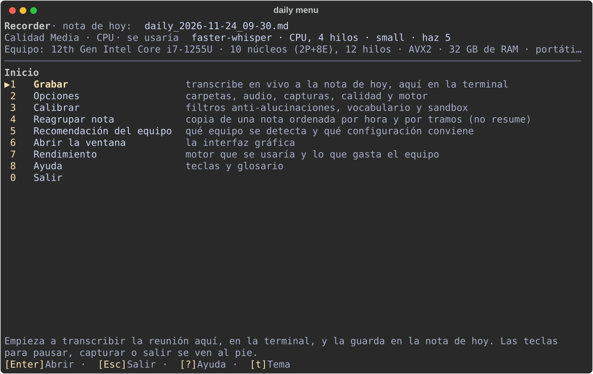
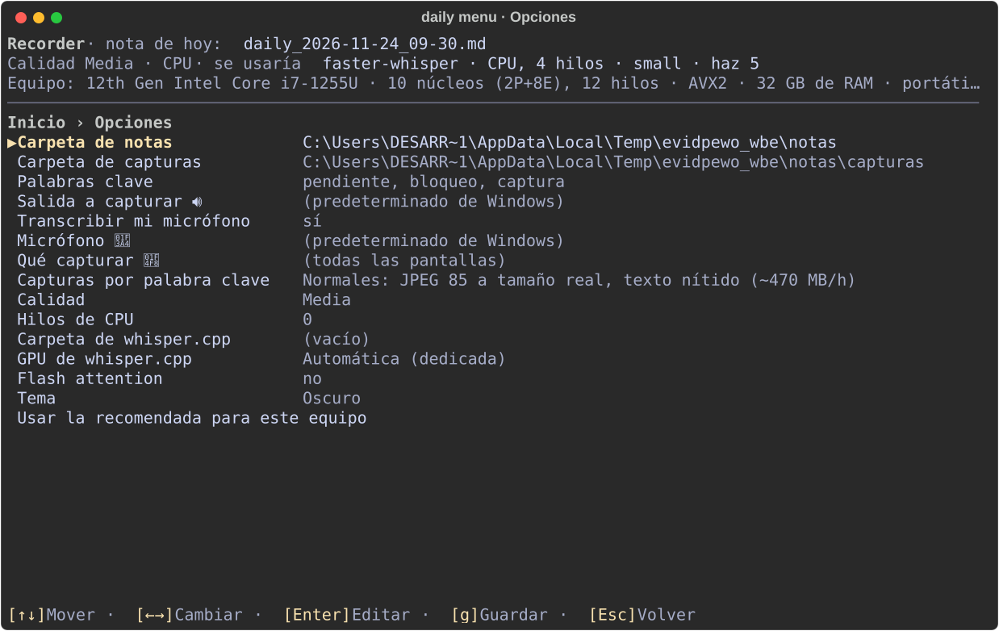
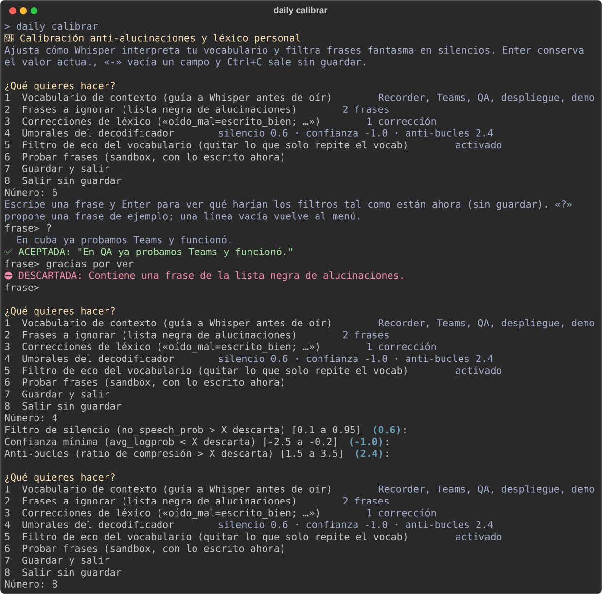
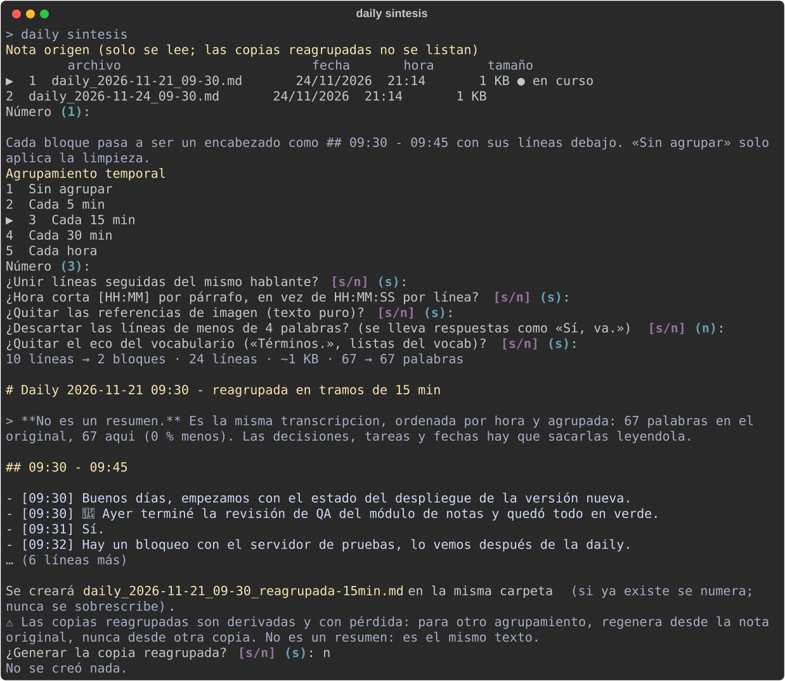
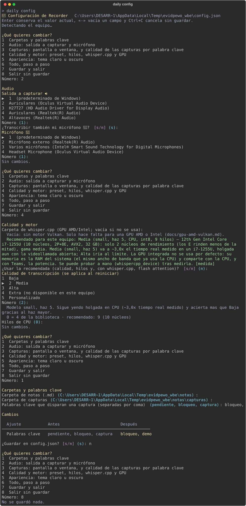
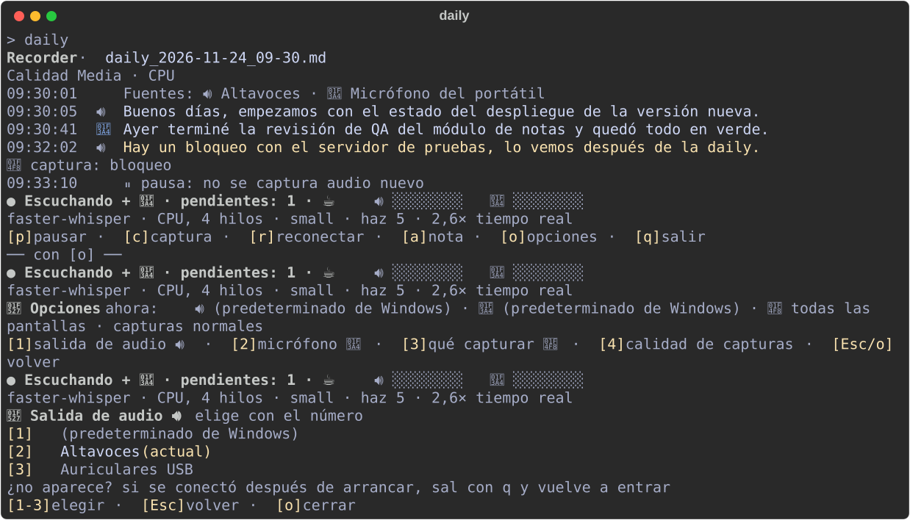
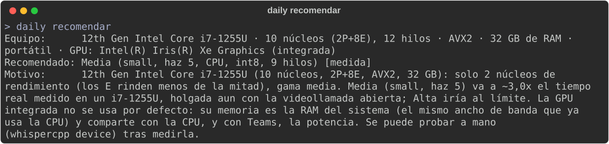
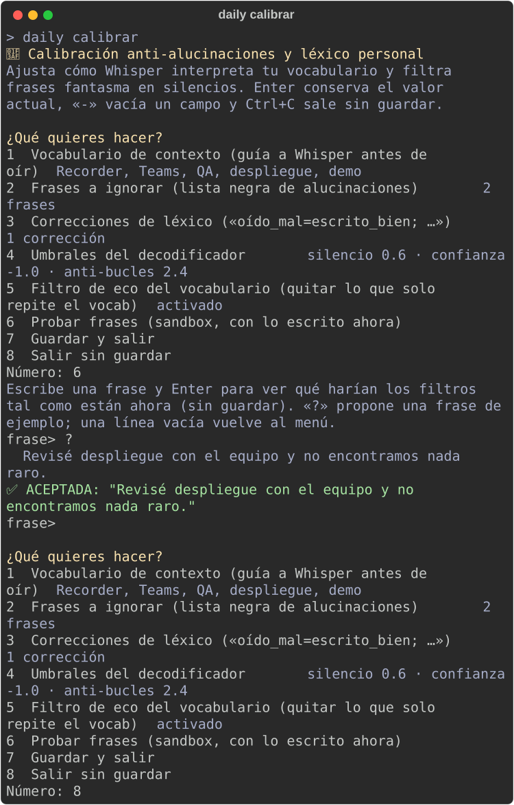

Pantallas de terminal de Recorder · tema oscuro, truecolor, 100 columnas (calibrar-60: 60 columnas)
daily menu · Inicio (referencia del estilo nuevo)
daily menu · Opciones
daily calibrar
daily sintesis (Reagrupar nota)
daily config (asistente)
daily (grabación): líneas, pie y panel [o]
daily recomendar
daily calibrar a 60 columnas